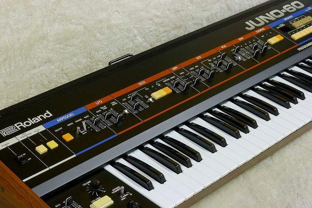

Scheda 086 · 1982 · Osaka, Giappone
Roland Juno-60
«Can You Feel It» è fatta con un Juno-60, un 909 e due registratori a cassetta
6 voci con l'oscillatore guidato da un circuito digitale e un chorus che si accende con un tasto.
Il suono vero · 0:45
Un Juno-60 vero che suona un tappeto d'archi, con l'ampiezza dell'impulso comandata dall'inviluppo: il gonfiarsi che sentite.
0:00 / 0:45
Registrazione di Raymangold22 · CC0 · Wikimedia Commons · estratto di 45 s, volume normalizzato
- USCITA
- 1982
- VOCI
- 6
- TASTI
- 61
- MEMORIE
- 56
La macchinaChe cos'è
Roland lo presenta nel 1982, dopo il Juno-6, e ha 61 tasti e 6 voci. Il Juno-6 non aveva memorie, questo ne ha 56, e sul pannello c'è la fila di tasti numerati per richiamarle. Il prezzo negli Stati Uniti è 1.750 o 1.795 dollari, a seconda della fonte. Il MIDI non esiste ancora, e il Juno-60 ha una presa che si chiama DCB, la prima porta digitale di Roland, buona solo per parlare con altre macchine Roland. A me il pannello piace quasi più del suono: è tutto in vista, in fila, e ogni slider fa una cosa sola.
Chi l'ha costruitaRoland, Osaka
Nel 1982 Roland fa uscire due synth uno dopo l'altro, il Juno-6 a 1.295 dollari e il Juno-60 che gli aggiunge le memorie. La novità sta dentro. Si chiama DCO ed è un oscillatore analogico guidato da un circuito digitale, che tiene l'accordatura anche quando cambia la temperatura. Sound On Sound scrive che con un oscillatore così un synth si poteva portare sul palco senza paura che stonasse. Gli oscillatori a tensione, con la temperatura che cambia, si scordano più facilmente.
Come funzionaCosa c'è dentro
Ogni voce ha un oscillatore con onda a dente di sega, quadra o a impulso, più un sub-oscillatore e il rumore. L'impulso si può far allargare e stringere a mano, con l'LFO o con l'inviluppo. L'ultima è la cosa che sentite nella registrazione: gli archi che si gonfiano da soli. Poi un filtro passa-alto senza risonanza e un passa-basso a 24 dB. L'inviluppo è uno solo, ADSR, e comanda sia il filtro sia il volume. In fondo c'è il chorus, con due tasti, I e II, e premendoli insieme viene più forte. Sono linee di ritardo modulate, e il suono esce in stereo.
Chi l'ha usataNei dischi
- Larry Heard (Mr. Fingers)«Can You Feel It», solo Juno-60 e TR-909
- Rob Hyman (Cyndi Lauper)«Time After Time» (1984), dice lui il pad della preset 61
Da ascoltare
Mr. Fingers, «Can You Feel It» (1986)
Sentite quanto poco c'è: un Juno-60 e un 909, e secondo Heard nient'altro in tutto il pezzo.
L'aneddotoUna storia
Larry Heard compra un Juno-60 e un TR-909 e comincia a fare dischi a casa, a Chicago. Il primo giorno nascono «Mystery of Love» e «Washing Machine», racconta. Per «Can You Feel It» non ha un registratore multitraccia, solo 2 cassette. Suona tutto in un passaggio su una, la riversa sull'altra e aggiunge a mano qualche parte. Frankie Knuckles e Ron Hardy la mettono da cassetta. Poi esce su Trax, lato B di «Washing Machine», nel 1986. Quando l'abbia registrata, le fonti non lo dicono con lo stesso anno.
Avvertenze
Niente MIDI: la presa DCB parla solo con macchine Roland. Per un sistema di oggi cercate prima l'interfaccia.
Il carosello · si aprono in grande
Le 6 tavole
Da dove viene
Fonti
- «Roland Juno-60» — Wikipedia (EN) verificata il 2026-11-10
- «JUNO-60: The Whole Story», Peter Kirn — Roland Articles, 17/02/2021 verificata il 2026-11-10
- «The History of Roland, Part 2» — Sound On Sound verificata il 2026-11-10
- «Roland Juno-60» — Vintage Synth Explorer verificata il 2026-11-10
- «1983 Roland Juno-60 Polyphony Review» — Matrixsynth verificata il 2026-11-10
- «Larry Heard, Can You Feel It», Josh Baines — Vice, 27/06/2017 verificata il 2026-11-10
- «Larry Heard on Making His First House Tracks» — Red Bull Music Academy, 01/02/2017 verificata il 2026-11-10
- «Sound Behind the Song: Can You Feel It», Alexander Dias — Roland Articles, 17/02/2021 verificata il 2026-11-10
- «Can You Feel It» (Fingers Inc.) — Wikipedia (EN) verificata il 2026-11-10
- «Rob Hyman: The Hooters, Time After Time, and the JUNO-60» — Roland Articles, 17/02/2021 verificata il 2026-11-10
- «JUNO-60 PWM Strings.ogg» — Wikimedia Commons (Raymangold22, CC0) verificata il 2026-11-10
Foto: deepsonic (Flickr) · CC BY 2.0 · Wikimedia Commons
Foto nelle tavole: deepsonic (Flickr) · CC BY 2.0 · Wikimedia Commons
Foto nelle tavole: deepsonic (Flickr) · CC BY 2.0 · Wikimedia Commons
Foto nelle tavole: deepsonic (Flickr) · CC BY 2.0 · Wikimedia Commons
Suono: Registrazione di Raymangold22 · CC0 · Wikimedia Commons · estratto di 45 s, volume normalizzato